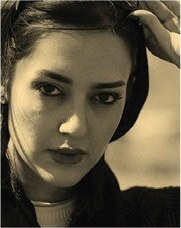
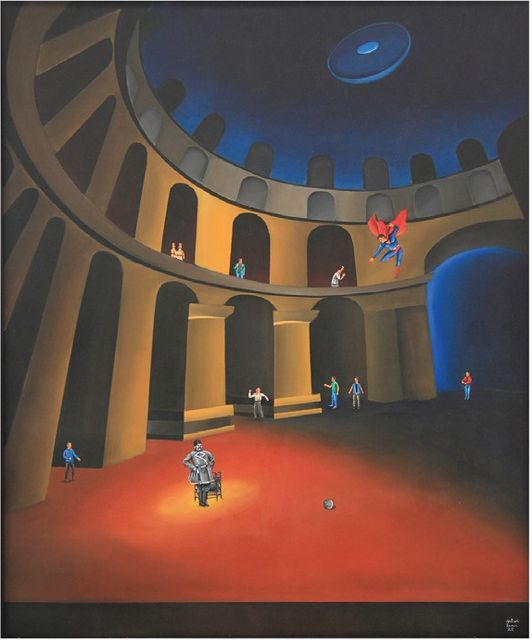
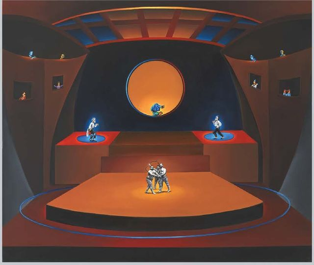
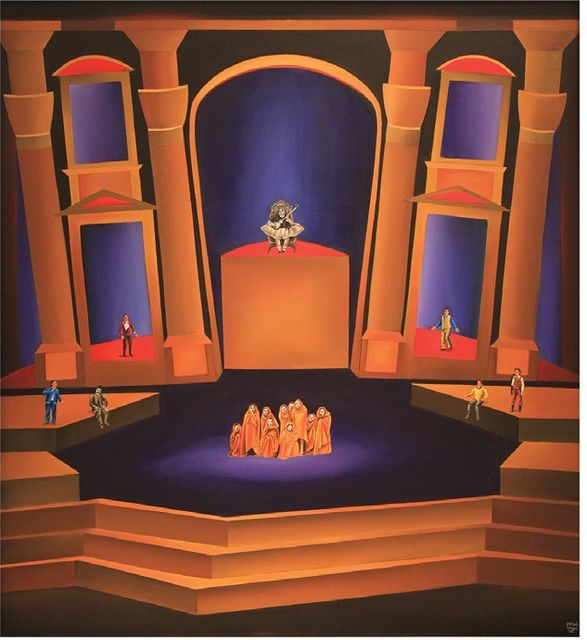
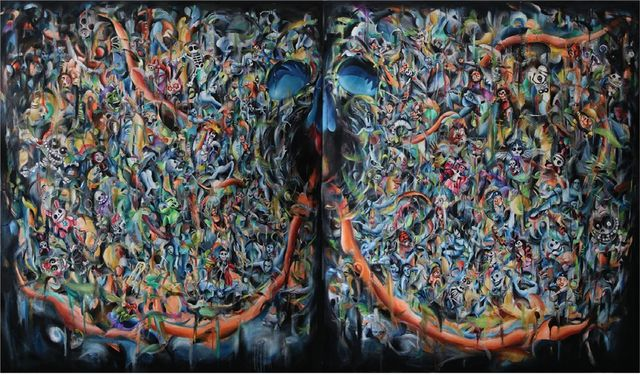
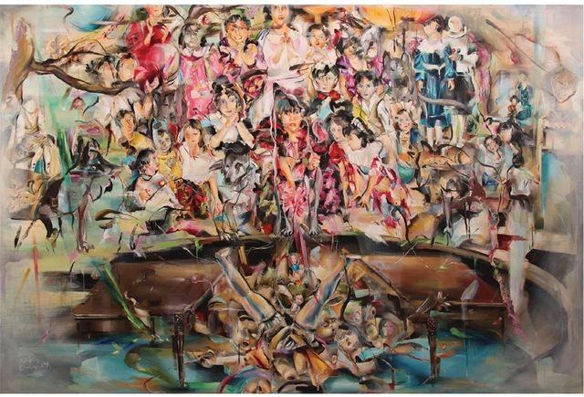
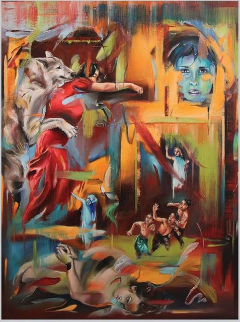

Artist
Nafiseh Emran

- Born1986
- FromIran
- Works7
- Dated2010–2014
StatementAbout the work
Till Our Role Playing
This is an invitation to an odd show whose players are placed in purposefully staged historical scenes.in her paintings, Nafiseh emran shows parts of ourselves in novel ways. in her first solo exhibition, similar to many of her peers from the same generation, she has embarked on a difficult path of creating new spaces. she makes us question ourselves, once again, where we are and how we should confront with contrasts and tensions. Nafiseh refers us to an age old concept of "catalysis", as defined by Aristotle through painting the theatre. unlike pluto, Aritotle believed that art and theatre cause a certain accord in the spectator. Which results in the comfort of one's spirit. Ayers The scenes from Nafiseh's theatre are current, while the players are extracted from old pictures, traditional popular theatre (called Roo-hozi in farsi), circus, dolls and cartoons. she admits real and imaginary, colorful and colorless scenes into her paintings that despite being contradictory create a grand show without making a statement. Although the scenes are strange and uncommon, why do they feel familiar? Why would the scenes that seem to be stationary and fixed, move in our psyche and create stories in our mind? And if they are satirical, why would they leave us in amazement in the midst of laughter and cry? Aren 't these paintings some sort of our own self-portrait presented to us by another? Nafiseh emran chooses the placement of her characters like ancient Iranian portraitists, but achieves a contemporary multifaceted and carnival like result. A show from ourselves and from our memories created for us, so that we could ask who we are and where do these paintings take us?
Dr. Behnam Kamrani
Works7 artworks







Disintegration
The dolls and toys of Nafiseh Emran's latest paintings depict a latent fright; a kind of apocalyptic space which is created in an imaginary world of toys. This world of toys and cartoon characters has been worked on and saturated to an extent that has changed their nature to opposite of what it was. This apocalyptic space belongs to a world formed by our imagination. As Francisco Goya mentions in the preface of his book comprising of a set of 80 prints, Los Caprichos, "The dream of wisdom creates demons." On the other hand, the tradition of miniature and kaleidoscopic painting can be found in the middle ages depicting inferno or in Hieronymus Bosch or in the school of Sagha Khaneh in Iran. Hence, through repetition and multiplication of toys and cartoon characters, Nafiseh Emran has managed to contemporize these traditions. The toys and cartoon characters are placed next to each other cautiously and meticulously, whose companionship creates smaller stories. Repetition and multiplication leads her paintings into abstraction; abstract pictures of chaos where new laws and certain images create a place and position. One wonders whether the resulting chaos is a creature of our imagination? or is it a destiny expecting us ? or simply games played and forgotten ?
Dr. Behnam Kamrani


On the Run
"On the Run" is the story of my little hero's struggle that ultimately leads to its liberation. Continuously moving forward in between refreshing images, in essence, there is something that is tempting and inviting which not only demonstrates hope and lucidity, but also the darkest perspective of my little hero's life. The issue, here, is the disappearance of templates which are seemingly unstable. These issues merge into one another in the same manner that objects whose sole purpose is to create stability and immobility (such as stone and wall and buildings) and create a creative and active mass while in a state of self-denial.
This is my world; a continuously changing and blooming world, a world of reincarnation and transmutation.
Nafiseh Emran




History of experienceBiography · education · exhibitions · awards
Education
- M.A IN Painting, Soore University|Tehran – Iran
Solo exhibitions
- 2014On The Run, Aun Gallery|Tehran – Iran
- 2013Co-Disintegration, Aun Gallery|Tehran – Iran
- 2011GGBG, Aun Gallery|Tehran – Iran
Group exhibitions
- 2015Niavaran Cultural Center," Breakable"|Tehran – Iran
- 2014Jahan Pahlevan', Curated by Arash Tanhayi, Shirin Gallery,|Tehran – Iran
- 2014Group Exhibition for 10 Anniversary of Mop, Sculamit Gallery,LA|USA
- 2013Aun Gallery, "Aun 92"|Tehran – Iran
- 2013Shirin Gallery," The eraser", Curated by Behnam Kamrani|Tehran
- 2013The second painting & sculpture, Annual Exhibition of Iranian Artist forum|Tehran – Iran
- 2012The first painting &sculpture, Annual Exhibition of Iranian Artist forum|Tehran – Iran
- 2012Shirin Gallery, "The Game"|Tehran – Iran
- 2012Aun Gallery,"Lightness", Curated by Rozita Sharafjahan|Tehran – Iran
- 2012Cooperation Azad Art Gallery And Takesh Gallery, charity|Tehran & Isfahan – Iran
- 2011The second Exhibition of works by leading youth, Mellat Gallery|Tehran – Iran
- 2011Unified in Diversity, Total Arts Gallery, Dubai|UAE
- 2011Shirin Art Gallery,"DOLL", Curated by Behnam Kamrani|Tehran – Iran
- 2010Shirin Art Gallery,5th Anniversary of Shirin Art Gallery|Tehran – Iran
- 2010Mohsen window" illustration & drawing Exhibition|Tehran – Iran
- 2010Mohsen Gallery, "The Cinema", curated by Behnam Kamrani|Tehran – Iran
- 2009Homa Art Gallery, the New Generation of Iranian Contemporary Artists|Tehran – Iran
- 2007Mellat Gallery, Handprint Exhibition|Tehran – Iran
Award
- 2010Mellat Gallery 1st Winner of Damonfar's Festival of young Contemporary Iranian Artists
Judgment
- First International Festival Of Pediatric Patients' Paintings|Tehran – Iran
Source: the Sobhan Gallery artist catalogue “Nafiseh Emran.pdf”.